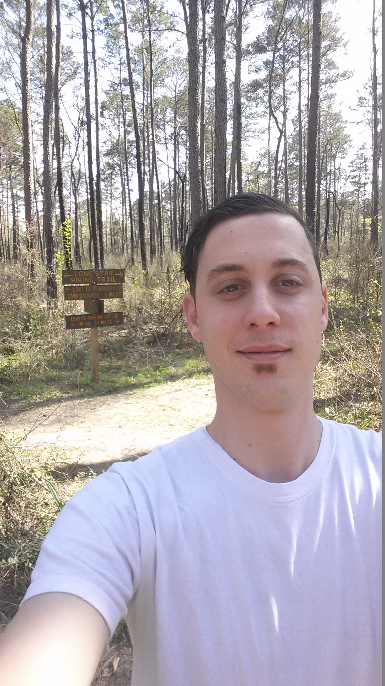

About Me
I’m originally from Buenos Aires, Argentina, and I came to United States with my family when I was barely 18 years old. At the beginning it was very difficult to adapt to a new culture and way of life because I didn’t speak or understood English. But through hard work and dedication I was able to finish high school (with a 4.0 GPA), and also College.
The main reason that fueled me to take on this course to become a Full Stack Web Developer was to make a career change, to add more tools to my current skill set, and to quench my thirst for new knowledge.
Once graduated, I plan on putting all of those new skills combined with my passion, determination and dedication towards creating something new and revolutionary; by thinking “outside-of-the-box” and doing what others have not done.